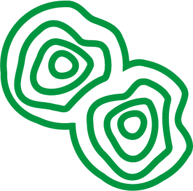
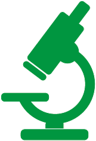
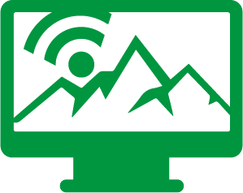

El proyecto va dirigido a docentes y el alumnado de entornos rurales.

Un experimento remoto es un experimento real, no es virtual ni simulado.

El alumnado puede completar un experimento tecnológico sin estar delante de él.
El Proyecto R3 tiene como objetivo fomentar la práctica científico-tecnológica real en escuelas y centros de formación rurales. Los alumnos tendrán acceso a experimentos remotos utilizando Internet.